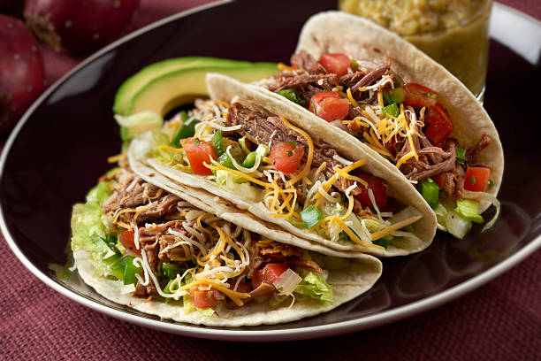

Tacos a la Federico

Tacos de carne y verduras terminados
Solo vas a necesitar unos pocos ingredientes para realizar esta receta que te va a hacer volar hasta tierras mexicanas
Una receta facil y sencilla para sorprender a tus amigos o familiares
- Carne
- Cebolla
- Morrón
- Tomate
- Salsa de soja
- Tapas de empanada
- Cortar la carne y las verduras en cubitos
- Sellar primera la carne en una sarte a fuego bajo
- Una vez sellada la carne agregamos las verduras
- Dejamos que las verduras se cocinen y una vez que estén blandas tiramos salsa de soja
- Estiramos las tapas de empanada para darle forma de tortilla de tacos
- Colocamos las tapas de empanada en una sarten a fuego lento y las sellamos de ambos lados
- Una vez que las verduras estén blandas y la carne cocinada sacamos del fuego y servimos